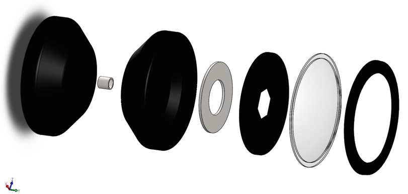
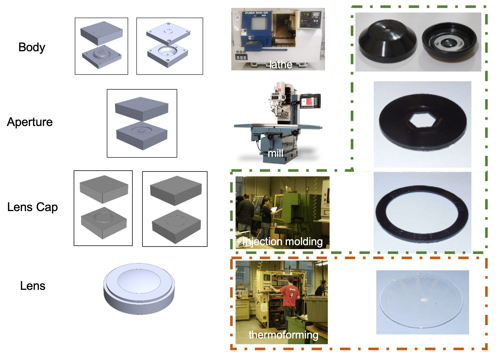

Flash! Yoyo
My team took inspiration from mechanical aperatures, and designed a yoyo mimicking a camera. I was specifically in charge of the lens and lens cap design, designing molds in Solidworks and generated the g-code in MasterCAM. I was also incharge of the manufacturing run for these parts, using optimized injection molding and thermoforming to create the parts. This was the final project for Design and Manufacturing II, a class focused on teaching design for manufacturing and provide hands-on experience on various methods of manufacturing. Our yoyo was also the fastest spinning in the history of the class.
CAM with MasterCAM
I designed the paperweight in Solidworks, and used MasterCAM to generate the necessary G-code for the CNC mills and lathes. This was the first project in the class, and was the test piece for optimizing several of the processes and tool selections.

Manufacturing and Finish
The part was subsequently buffed after lathe and mill work. There were a few deformities in the stock that ended up in the final part. Not all arcs were as smooth as I had hoped. Vibrations and tool wear are likely other sources of error. A smaller tool, and more complex paths could have improved the final part. As I had limited run time, there was a limit to the speed and number of finishing passes I could take. Images taken with a surface microscope:
Yoyo Manufacturing


Manufacturing Process Analyses
We further analyzed the product and assembly process. The final analysis, including X-bar and R charts, is included in our final report. A table summarizing key measurements is shown below.